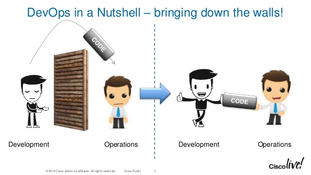
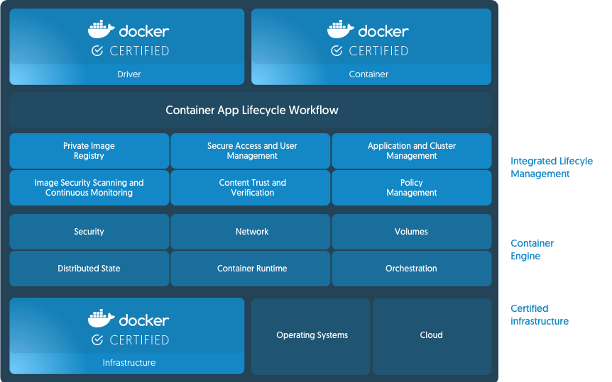
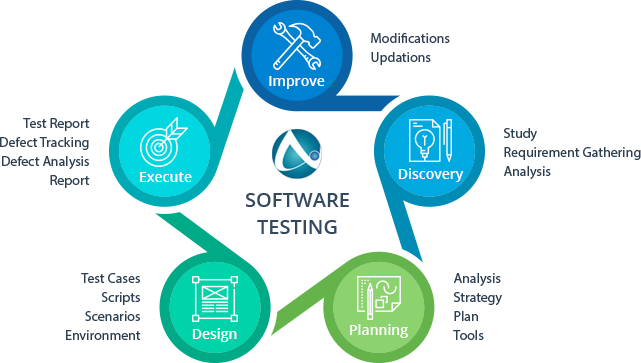

Faculteit Bedrijf en Organisatie
Docker for Windows
Stephan Heirbaut
Scriptie voorgedragen tot het bekomen van de graad van
professionele bachelor in de toegepaste informatica
Promotor:
Steven Vermeulen
Co-promotor:
Gert Schepens
Instelling: —
Academiejaar: 2017-2018
Tweede examenperiode
Faculteit Bedrijf en Organisatie
Docker for Windows
Stephan Heirbaut
Scriptie voorgedragen tot het bekomen van de graad van
professionele bachelor in de toegepaste informatica
Promotor:
Steven Vermeulen
Co-promotor:
Gert Schepens
Instelling: —
Academiejaar: 2017-2018
Tweede examenperiode
Docker for Windows Server 2016 is uit beta gekomen op 22 februari 2017. Maar, desondanks het feit dat dit platform nu al een ruime tijd beschikbaar is, heeft het nog steeds geen tractie gevonden bij DevOps-teams. Dit ondanks het feit dat dit een krachtige tool kan zijn voor organisaties die ook Microsoft Certified Partners willen zijn. In een notendop, er zal dus gekeken worden of Docker for Windows Server 2016 een goed alternatief is voor het draaien van Docker in een Linux omgeving. Om dit op een methodologische manier uit te testen zal er vertrokken worden van een standaard Windows Server 2016 en CentOS 7.4 installatie waarop Docker geïnstalleerd zal worden. Waarna beide omgevingen getest zullen worden op door middel van performatie-, integratie- en beveiligingstesten. Verder zal ook de documentatie voor beide platformen bekeken worden op vlak van compleetheid.
De verwachting is dat het verschil tussen beide systemen minimaal zal zijn, waarbij de CentOS server iets beter zal presteren op vlak van beveiliging. Maar, dat de Windows Server 2016 iets beter zal presteren op vlak van integratie. De documentatie voor CentOS zal ook meer compleet zijn, maar dat zowel Windows als Docker op dat vlak een grote inhaalbeweging aan het maken zijn.
Verdere vragen die men hierna nog zou kunnen stellen zijn:
Voor 22 februari 2017 kon men dus enkel Docker installeren op Linux besturingssystemen. Dit
dwong een onderneming zonder de nodige kennis van Linux, maar met het oog op evolutie
naar DevOps, om ofwel de nodige kennis aan te schaffen of dat iemand zich via een
spoedcursus zich onderdompelt in de wereld van Linux. Maar, met de komst van Windows
10 en Windows Server 2016, en de gepaarde groei van PowerShell en Hyper-V, is
Docker nu ook toegankelijk voor organisaties die meer Windows gezind willen zijn.
(
Want, het zou een vergissing zijn om Docker zomaar te negeren als je de DevOps richting uit
wilt gaan. Het biedt immers verschillende gereedschappen aan voor zowel je developers als je
sys admins. Bijvoorbeeld, Containers as a Service (CaaS) en role-based access control voor
Operations, en een zelfbedienings-manier van werken voor Developers waarbij ze services
kunnen opvragen wanneer zij ze nodig. Momenteel wordt Docker dan ook gebruikt in 44
procent van de ondernemingen die van plan zijn om de DevOps richting in te slaan.
(
DevOps is een geclipte verbinding van de woorden ’Development’ en ’Operations’, je ontwikkeling en beheer. Voorheen werkte deze IT groepering strikt scheiden, waardoor je ofwel bij de ene groep zat ofwel de andere. Dit zorgt ervoor dat, als men een applicatie wilt maken, de developers het ontwikkelen en die dan richting de systeembeheerders gooien zodra het klaar is. Vanaf dan is het hun probleem maar. Als zij problemen hebben om de applicatie op hun servers uitgerold te krijgen, is het niet hun fout meer. Zij moeten maar zien dat alles werkt. Aangezien beide niet veel kaas hebben gegeten van elkaars bedrijfstak, zorgt dit vaak voor wrevel door discussies en vinger wijzen.

Bij DevOps worden deze groepen gedwongen om samen te werken in één team. Zodat je samengevoegd een som krijgt die groter is dan het geheel. In praktijk vertaald dit zich naar een cultuur die gestimuleerd dient te worden, waarin het automatiseren van zoveel mogelijk zaken centraal staat met een focus op continue ontwikkeling en oplevering. Waarbij leren en het delen van informatie, en communicatie in het algemeen, zeer belangrijk is. Er worden ook verschillende manieren voorzien om informatie te verzamelen uit de applicatie, door methodes te implementeren die men gebruikt om zo een doorzichtiger systeem te hebben. Het is dus eerder een groep van concepten en ideeën dat gegroeid is tot een beweging dat snel tractie aan het winnen is.
Als éénduidige definitie voor DevOps kom je er het dichts bij met het acroniem ’CALMS’.
(
Docker is een gereedschap om het uitrollen van applicaties sneller en makkelijker te maken
doordat het de applicatie, en alle benodigdheden, ervoor in één geautomatiseerd pakketje
verpakt. Dat zal werken los van het host besturingssysteem. Dit pakket in zijn geheel wordt een
container genoemd. (
Containers lijken op het eerste zicht hard op virtuele machines. Maar, belangrijk om te
onthouden is dat de onderliggende architectuur sterk verschilt tussen de 2. De beste manier om
ernaar te kijken is zoals naar appartementen en huizen. Een huis staat volledig op zich, en
voorziet zelf in al zijn behoefte qua infrastructuur. Net zoals een huis zal de virtuele machine
volledig onafhankelijk opgebouwd worden, los van je eigen host. Containers zijn zoals
appartementen in dat ze de bestaande infrastructuur delen. Alle middelen van de host waar de
Docker Host op geïnstalleerd wordt zullen worden gedeeld onder de verschillende containers.
Waarbij, net zoals een appartement, elk aangeboden container voldoet aan de noden van zijn
bewoner. (
Een container zal hierdoor dus een lichtere en onafhankelijke uitvoerbaar software
pakket kunnen opbouwen. Met de extra bonus dat het consistentie kan garanderen
doordat er telkens gebruik zal gemaakt worden van dezelfde achterliggende images.
(
Doordat elk deel van een applicatie dus in zo’n appartementje zit, is het maken van continue
ontwikkeling en oplevering voor de applicatie heel makkelijk te doen. Je moet immers alleen die
specifieke container updaten/graden. Hierdoor is het de perfecte technologie om te dienen als
productie- en testomgeving. Verder versoepelt het ook de communicatie in het DevOps-team
doordat iedereen continue in dezelfde omgeving aan het werken is. Er zijn immers geen grote
veranderingen nodig tijdens verschillende stappen van de leveringsketen. Verder maakt het ook
nog het leven van iedereen makkelijker doordat je instaat bent op verschillende frameworks te
draaien op één platform. Omdat de container vrij agnostisch zijn op vlak van programmeertaal
of platform. Containers kunnen ook makkelijk van host besturingssysteem verplaatst worden.
(


Het door al deze redenen dat Docker jaar na jaar blijft groeien. Tijdens de meest recentste DockerCon heeft de CEO van Docker enkele knallende cijfers kunnen tonen, zoals bijvoorbeeld:
(
Docker heeft deze groei ook verdient. Door constant in contact te blijven met zijn gebruikers. In
het verleden hadden ze immers de klacht gekregen dat ze ofwel te traag of te snel
updates toevoegden aan het systeem. Om dit te remediëren hebben ze naast Docker
Community Edition, waarmee alles is begonnen, nu ook Docker Enterprise Edition
in het leven geroepen. Met daarbovenop een verschuiving naar een tijdgebaseerde
updatesysteem. Waarbij je kunt kiezen tussen elke maand een update, maar zonder
garantie op stabiliteit (Edge). Of, elke 4 maand een update, voor gebruikers die stabiliteit
prefereren zowel op vlak van onderhoud als beheer (Stable). Daarbovenop heeft de
Enterprise Edition ook een uitgebreidere ondersteuning met verschillende gradaties.
(
Zoals eerder aangehaald is Docker CE het origineel platform waarmee ze zijn begonnen. Het is
ideaal voor kleine teams of onafhankelijke developers die willen experimenteren met container
technologie. Beschikbaar voor zowel Linux, Windows als Mac is het perfect als kleine en snelle
installatie om direct aan de slag te gaan. Daarbovenop biedt het ook ondersteuning
voor het uitrollen naar Cloud omgevingen, zoals Amazone Web Services of Azure.
(
Docker Enterprise Edition is volledige pakket voor zij die op een professionele manier met een
Containers-as-a-Serivce platform willen werken. Docker EE is dus een geïntegreerd en getest
platform voor Linux of Windows Enterprise en Cloud providers, met door Docker
gecertificeerde componenten en ondersteuning. In het bijzonder, is voor datacenters een handig
dashboard waar ze hun multi-architecturaal orkestratie software supply chain kunnen volgen op
een veilig manier. Vooral aan dat laatste heeft Docker extra veel aandacht besteedt met
kenmerken zoals trusted delivery. (

In het hart van software testing ligt een focus op kwaliteit in alle delen van de organisatie. Dit is
belangrijk om te weten omdat het ontwikkelingsteam verantwoordelijk is voor de kwaliteit. QA
teams kunnen misschien op tijd aan de alarmbel trekken op vlak van risico’s, maar men kan
niet de verantwoordelijkheid van kwaliteit wegnemen van het ontwikkelingsproces.
Daarom dat software testing eist dat iedereen, inclusief de gebruiker betrokken is bij het
ontwikkelingsproces. (


De probleemstelling die zich voordoet is dat Docker op zich nog een, relatief, jonge technologie is, met daarbovenop een eigen syntaxis en verandering van werken en denken vereist om het op een goede manier te beheersen. Stap bij stap zijn Linux administrators er ondertussen vertrouwd mee aan het geraken. Maar, voor Windows administrators is dit een gloednieuwe technologie.
De onderzoeksvragen die uit deze probleemstelling dan voortvloeien luiden als volgt:
Voor al deze vragen kon er tot op heden nog geen afdoend antwoord voor gevonden worden. Er hebben wel al verschillende gebruikers Docker for Windows uitgetest en vergeleken met Linux. Maar, nooit op een concrete en methodische manier. Vaak benaderden ze deze technologie ook vanuit een bestaande mening, en niet met een neutraal perspectief.
Dit onderzoek zal vooral een grote meerwaarde zijn voor DevOps teams die op zoek zijn naar een Windows oplossingen voor hun problemen in verband automatisatie en continue oplevering.
De rest van deze bachelorproef is als volgt opgebouwd:
In Hoofdstuk 2 wordt de methodologie toegelicht en worden de gebruikte onderzoekstechnieken besproken om een antwoord te kunnen formuleren op de onderzoeksvragen.
In Hoofdstuk 3 worden beide opstellingen bekeken en besproken. Namelijk, we gaan kijken naar de hoe het is om beide op te bouwen, de verschillen en gelijkenissen.
In Hoofdstuk 4 zal de documentatie van beide platformen besproken worden. Er zal gekeken worden naar volledigheid, interne en externe bronnen en hoeveel ondersteuning er is vanuit de hoofdorganisatie.
In Hoofdstuk 5 kijken we naar het resultaat van de werklading dat beide systeem te verduren hebben gekregen en hoe ze het er vanaf gebracht hebben.
In Hoofdstuk 6 bekijken we hoe goed de Docker module integreert met het host systeem. Welke resources Docker beschikbaar heeft op het systeem en hoe Docker er gebruik van maakt.
In Hoofdstuk 7 bespreken we welke veiligheidsmaatregelen er beschikbaar zijn voor beide systemen om Docker zo goed mogelijk te beveiligen en hoe effectief deze zijn.
In Hoofdstuk 8, tenslotte, wordt de conclusie gegeven en een antwoord geformuleerd op de onderzoeksvragen. Daarbij wordt ook een aanzet gegeven voor toekomstig onderzoek binnen dit domein.
Etiam pede massa, dapibus vitae, rhoncus in, placerat posuere, odio. Vestibulum luctus commodo lacus. Morbi lacus dui, tempor sed, euismod eget, condimentum at, tortor. Phasellus aliquet odio ac lacus tempor faucibus. Praesent sed sem. Praesent iaculis. Cras rhoncus tellus sed justo ullamcorper sagittis. Donec quis orci. Sed ut tortor quis tellus euismod tincidunt. Suspendisse congue nisl eu elit. Aliquam tortor diam, tempus id, tristique eget, sodales vel, nulla. Praesent tellus mi, condimentum sed, viverra at, consectetuer quis, lectus. In auctor vehicula orci. Sed pede sapien, euismod in, suscipit in, pharetra placerat, metus. Vivamus commodo dui non odio. Donec et felis.
Etiam suscipit aliquam arcu. Aliquam sit amet est ac purus bibendum congue. Sed in eros. Morbi non orci. Pellentesque mattis lacinia elit. Fusce molestie velit in ligula. Nullam et orci vitae nibh vulputate auctor. Aliquam eget purus. Nulla auctor wisi sed ipsum. Morbi porttitor tellus ac enim. Fusce ornare. Proin ipsum enim, tincidunt in, ornare venenatis, molestie a, augue. Donec vel pede in lacus sagittis porta. Sed hendrerit ipsum quis nisl. Suspendisse quis massa ac nibh pretium cursus. Sed sodales. Nam eu neque quis pede dignissim ornare. Maecenas eu purus ac urna tincidunt congue.
Donec et nisl id sapien blandit mattis. Aenean dictum odio sit amet risus. Morbi purus. Nulla a est sit amet purus venenatis iaculis. Vivamus viverra purus vel magna. Donec in justo sed odio malesuada dapibus. Nunc ultrices aliquam nunc. Vivamus facilisis pellentesque velit. Nulla nunc velit, vulputate dapibus, vulputate id, mattis ac, justo. Nam mattis elit dapibus purus. Quisque enim risus, congue non, elementum ut, mattis quis, sem. Quisque elit.
Maecenas non massa. Vestibulum pharetra nulla at lorem. Duis quis quam id lacus dapibus interdum. Nulla lorem. Donec ut ante quis dolor bibendum condimentum. Etiam egestas tortor vitae lacus. Praesent cursus. Mauris bibendum pede at elit. Morbi et felis a lectus interdum facilisis. Sed suscipit gravida turpis. Nulla at lectus. Vestibulum ante ipsum primis in faucibus orci luctus et ultrices posuere cubilia Curae; Praesent nonummy luctus nibh. Proin turpis nunc, congue eu, egestas ut, fringilla at, tellus. In hac habitasse platea dictumst.
Vivamus eu tellus sed tellus consequat suscipit. Nam orci orci, malesuada id, gravida nec, ultricies vitae, erat. Donec risus turpis, luctus sit amet, interdum quis, porta sed, ipsum. Suspendisse condimentum, tortor at egestas posuere, neque metus tempor orci, et tincidunt urna nunc a purus. Sed facilisis blandit tellus. Nunc risus sem, suscipit nec, eleifend quis, cursus quis, libero. Curabitur et dolor. Sed vitae sem. Cum sociis natoque penatibus et magnis dis parturient montes, nascetur ridiculus mus. Maecenas ante. Duis ullamcorper enim. Donec tristique enim eu leo. Nullam molestie elit eu dolor. Nullam bibendum, turpis vitae tristique gravida, quam sapien tempor lectus, quis pretium tellus purus ac quam. Nulla facilisi.
Etiam pede massa, dapibus vitae, rhoncus in, placerat posuere, odio. Vestibulum luctus commodo lacus. Morbi lacus dui, tempor sed, euismod eget, condimentum at, tortor. Phasellus aliquet odio ac lacus tempor faucibus. Praesent sed sem. Praesent iaculis. Cras rhoncus tellus sed justo ullamcorper sagittis. Donec quis orci. Sed ut tortor quis tellus euismod tincidunt. Suspendisse congue nisl eu elit. Aliquam tortor diam, tempus id, tristique eget, sodales vel, nulla. Praesent tellus mi, condimentum sed, viverra at, consectetuer quis, lectus. In auctor vehicula orci. Sed pede sapien, euismod in, suscipit in, pharetra placerat, metus. Vivamus commodo dui non odio. Donec et felis.
Etiam suscipit aliquam arcu. Aliquam sit amet est ac purus bibendum congue. Sed in eros. Morbi non orci. Pellentesque mattis lacinia elit. Fusce molestie velit in ligula. Nullam et orci vitae nibh vulputate auctor. Aliquam eget purus. Nulla auctor wisi sed ipsum. Morbi porttitor tellus ac enim. Fusce ornare. Proin ipsum enim, tincidunt in, ornare venenatis, molestie a, augue. Donec vel pede in lacus sagittis porta. Sed hendrerit ipsum quis nisl. Suspendisse quis massa ac nibh pretium cursus. Sed sodales. Nam eu neque quis pede dignissim ornare. Maecenas eu purus ac urna tincidunt congue.
Donec et nisl id sapien blandit mattis. Aenean dictum odio sit amet risus. Morbi purus. Nulla a est sit amet purus venenatis iaculis. Vivamus viverra purus vel magna. Donec in justo sed odio malesuada dapibus. Nunc ultrices aliquam nunc. Vivamus facilisis pellentesque velit. Nulla nunc velit, vulputate dapibus, vulputate id, mattis ac, justo. Nam mattis elit dapibus purus. Quisque enim risus, congue non, elementum ut, mattis quis, sem. Quisque elit.
Maecenas non massa. Vestibulum pharetra nulla at lorem. Duis quis quam id lacus dapibus interdum. Nulla lorem. Donec ut ante quis dolor bibendum condimentum. Etiam egestas tortor vitae lacus. Praesent cursus. Mauris bibendum pede at elit. Morbi et felis a lectus interdum facilisis. Sed suscipit gravida turpis. Nulla at lectus. Vestibulum ante ipsum primis in faucibus orci luctus et ultrices posuere cubilia Curae; Praesent nonummy luctus nibh. Proin turpis nunc, congue eu, egestas ut, fringilla at, tellus. In hac habitasse platea dictumst.
Vivamus eu tellus sed tellus consequat suscipit. Nam orci orci, malesuada id, gravida nec, ultricies vitae, erat. Donec risus turpis, luctus sit amet, interdum quis, porta sed, ipsum. Suspendisse condimentum, tortor at egestas posuere, neque metus tempor orci, et tincidunt urna nunc a purus. Sed facilisis blandit tellus. Nunc risus sem, suscipit nec, eleifend quis, cursus quis, libero. Curabitur et dolor. Sed vitae sem. Cum sociis natoque penatibus et magnis dis parturient montes, nascetur ridiculus mus. Maecenas ante. Duis ullamcorper enim. Donec tristique enim eu leo. Nullam molestie elit eu dolor. Nullam bibendum, turpis vitae tristique gravida, quam sapien tempor lectus, quis pretium tellus purus ac quam. Nulla facilisi.
Etiam pede massa, dapibus vitae, rhoncus in, placerat posuere, odio. Vestibulum luctus commodo lacus. Morbi lacus dui, tempor sed, euismod eget, condimentum at, tortor. Phasellus aliquet odio ac lacus tempor faucibus. Praesent sed sem. Praesent iaculis. Cras rhoncus tellus sed justo ullamcorper sagittis. Donec quis orci. Sed ut tortor quis tellus euismod tincidunt. Suspendisse congue nisl eu elit. Aliquam tortor diam, tempus id, tristique eget, sodales vel, nulla. Praesent tellus mi, condimentum sed, viverra at, consectetuer quis, lectus. In auctor vehicula orci. Sed pede sapien, euismod in, suscipit in, pharetra placerat, metus. Vivamus commodo dui non odio. Donec et felis.
Etiam suscipit aliquam arcu. Aliquam sit amet est ac purus bibendum congue. Sed in eros. Morbi non orci. Pellentesque mattis lacinia elit. Fusce molestie velit in ligula. Nullam et orci vitae nibh vulputate auctor. Aliquam eget purus. Nulla auctor wisi sed ipsum. Morbi porttitor tellus ac enim. Fusce ornare. Proin ipsum enim, tincidunt in, ornare venenatis, molestie a, augue. Donec vel pede in lacus sagittis porta. Sed hendrerit ipsum quis nisl. Suspendisse quis massa ac nibh pretium cursus. Sed sodales. Nam eu neque quis pede dignissim ornare. Maecenas eu purus ac urna tincidunt congue.
Donec et nisl id sapien blandit mattis. Aenean dictum odio sit amet risus. Morbi purus. Nulla a est sit amet purus venenatis iaculis. Vivamus viverra purus vel magna. Donec in justo sed odio malesuada dapibus. Nunc ultrices aliquam nunc. Vivamus facilisis pellentesque velit. Nulla nunc velit, vulputate dapibus, vulputate id, mattis ac, justo. Nam mattis elit dapibus purus. Quisque enim risus, congue non, elementum ut, mattis quis, sem. Quisque elit.
Maecenas non massa. Vestibulum pharetra nulla at lorem. Duis quis quam id lacus dapibus interdum. Nulla lorem. Donec ut ante quis dolor bibendum condimentum. Etiam egestas tortor vitae lacus. Praesent cursus. Mauris bibendum pede at elit. Morbi et felis a lectus interdum facilisis. Sed suscipit gravida turpis. Nulla at lectus. Vestibulum ante ipsum primis in faucibus orci luctus et ultrices posuere cubilia Curae; Praesent nonummy luctus nibh. Proin turpis nunc, congue eu, egestas ut, fringilla at, tellus. In hac habitasse platea dictumst.
Vivamus eu tellus sed tellus consequat suscipit. Nam orci orci, malesuada id, gravida nec, ultricies vitae, erat. Donec risus turpis, luctus sit amet, interdum quis, porta sed, ipsum. Suspendisse condimentum, tortor at egestas posuere, neque metus tempor orci, et tincidunt urna nunc a purus. Sed facilisis blandit tellus. Nunc risus sem, suscipit nec, eleifend quis, cursus quis, libero. Curabitur et dolor. Sed vitae sem. Cum sociis natoque penatibus et magnis dis parturient montes, nascetur ridiculus mus. Maecenas ante. Duis ullamcorper enim. Donec tristique enim eu leo. Nullam molestie elit eu dolor. Nullam bibendum, turpis vitae tristique gravida, quam sapien tempor lectus, quis pretium tellus purus ac quam. Nulla facilisi.
Etiam pede massa, dapibus vitae, rhoncus in, placerat posuere, odio. Vestibulum luctus commodo lacus. Morbi lacus dui, tempor sed, euismod eget, condimentum at, tortor. Phasellus aliquet odio ac lacus tempor faucibus. Praesent sed sem. Praesent iaculis. Cras rhoncus tellus sed justo ullamcorper sagittis. Donec quis orci. Sed ut tortor quis tellus euismod tincidunt. Suspendisse congue nisl eu elit. Aliquam tortor diam, tempus id, tristique eget, sodales vel, nulla. Praesent tellus mi, condimentum sed, viverra at, consectetuer quis, lectus. In auctor vehicula orci. Sed pede sapien, euismod in, suscipit in, pharetra placerat, metus. Vivamus commodo dui non odio. Donec et felis.
Etiam suscipit aliquam arcu. Aliquam sit amet est ac purus bibendum congue. Sed in eros. Morbi non orci. Pellentesque mattis lacinia elit. Fusce molestie velit in ligula. Nullam et orci vitae nibh vulputate auctor. Aliquam eget purus. Nulla auctor wisi sed ipsum. Morbi porttitor tellus ac enim. Fusce ornare. Proin ipsum enim, tincidunt in, ornare venenatis, molestie a, augue. Donec vel pede in lacus sagittis porta. Sed hendrerit ipsum quis nisl. Suspendisse quis massa ac nibh pretium cursus. Sed sodales. Nam eu neque quis pede dignissim ornare. Maecenas eu purus ac urna tincidunt congue.
Donec et nisl id sapien blandit mattis. Aenean dictum odio sit amet risus. Morbi purus. Nulla a est sit amet purus venenatis iaculis. Vivamus viverra purus vel magna. Donec in justo sed odio malesuada dapibus. Nunc ultrices aliquam nunc. Vivamus facilisis pellentesque velit. Nulla nunc velit, vulputate dapibus, vulputate id, mattis ac, justo. Nam mattis elit dapibus purus. Quisque enim risus, congue non, elementum ut, mattis quis, sem. Quisque elit.
Maecenas non massa. Vestibulum pharetra nulla at lorem. Duis quis quam id lacus dapibus interdum. Nulla lorem. Donec ut ante quis dolor bibendum condimentum. Etiam egestas tortor vitae lacus. Praesent cursus. Mauris bibendum pede at elit. Morbi et felis a lectus interdum facilisis. Sed suscipit gravida turpis. Nulla at lectus. Vestibulum ante ipsum primis in faucibus orci luctus et ultrices posuere cubilia Curae; Praesent nonummy luctus nibh. Proin turpis nunc, congue eu, egestas ut, fringilla at, tellus. In hac habitasse platea dictumst.
Vivamus eu tellus sed tellus consequat suscipit. Nam orci orci, malesuada id, gravida nec, ultricies vitae, erat. Donec risus turpis, luctus sit amet, interdum quis, porta sed, ipsum. Suspendisse condimentum, tortor at egestas posuere, neque metus tempor orci, et tincidunt urna nunc a purus. Sed facilisis blandit tellus. Nunc risus sem, suscipit nec, eleifend quis, cursus quis, libero. Curabitur et dolor. Sed vitae sem. Cum sociis natoque penatibus et magnis dis parturient montes, nascetur ridiculus mus. Maecenas ante. Duis ullamcorper enim. Donec tristique enim eu leo. Nullam molestie elit eu dolor. Nullam bibendum, turpis vitae tristique gravida, quam sapien tempor lectus, quis pretium tellus purus ac quam. Nulla facilisi.
Etiam pede massa, dapibus vitae, rhoncus in, placerat posuere, odio. Vestibulum luctus commodo lacus. Morbi lacus dui, tempor sed, euismod eget, condimentum at, tortor. Phasellus aliquet odio ac lacus tempor faucibus. Praesent sed sem. Praesent iaculis. Cras rhoncus tellus sed justo ullamcorper sagittis. Donec quis orci. Sed ut tortor quis tellus euismod tincidunt. Suspendisse congue nisl eu elit. Aliquam tortor diam, tempus id, tristique eget, sodales vel, nulla. Praesent tellus mi, condimentum sed, viverra at, consectetuer quis, lectus. In auctor vehicula orci. Sed pede sapien, euismod in, suscipit in, pharetra placerat, metus. Vivamus commodo dui non odio. Donec et felis.
Etiam suscipit aliquam arcu. Aliquam sit amet est ac purus bibendum congue. Sed in eros. Morbi non orci. Pellentesque mattis lacinia elit. Fusce molestie velit in ligula. Nullam et orci vitae nibh vulputate auctor. Aliquam eget purus. Nulla auctor wisi sed ipsum. Morbi porttitor tellus ac enim. Fusce ornare. Proin ipsum enim, tincidunt in, ornare venenatis, molestie a, augue. Donec vel pede in lacus sagittis porta. Sed hendrerit ipsum quis nisl. Suspendisse quis massa ac nibh pretium cursus. Sed sodales. Nam eu neque quis pede dignissim ornare. Maecenas eu purus ac urna tincidunt congue.
Donec et nisl id sapien blandit mattis. Aenean dictum odio sit amet risus. Morbi purus. Nulla a est sit amet purus venenatis iaculis. Vivamus viverra purus vel magna. Donec in justo sed odio malesuada dapibus. Nunc ultrices aliquam nunc. Vivamus facilisis pellentesque velit. Nulla nunc velit, vulputate dapibus, vulputate id, mattis ac, justo. Nam mattis elit dapibus purus. Quisque enim risus, congue non, elementum ut, mattis quis, sem. Quisque elit.
Maecenas non massa. Vestibulum pharetra nulla at lorem. Duis quis quam id lacus dapibus interdum. Nulla lorem. Donec ut ante quis dolor bibendum condimentum. Etiam egestas tortor vitae lacus. Praesent cursus. Mauris bibendum pede at elit. Morbi et felis a lectus interdum facilisis. Sed suscipit gravida turpis. Nulla at lectus. Vestibulum ante ipsum primis in faucibus orci luctus et ultrices posuere cubilia Curae; Praesent nonummy luctus nibh. Proin turpis nunc, congue eu, egestas ut, fringilla at, tellus. In hac habitasse platea dictumst.
Vivamus eu tellus sed tellus consequat suscipit. Nam orci orci, malesuada id, gravida nec, ultricies vitae, erat. Donec risus turpis, luctus sit amet, interdum quis, porta sed, ipsum. Suspendisse condimentum, tortor at egestas posuere, neque metus tempor orci, et tincidunt urna nunc a purus. Sed facilisis blandit tellus. Nunc risus sem, suscipit nec, eleifend quis, cursus quis, libero. Curabitur et dolor. Sed vitae sem. Cum sociis natoque penatibus et magnis dis parturient montes, nascetur ridiculus mus. Maecenas ante. Duis ullamcorper enim. Donec tristique enim eu leo. Nullam molestie elit eu dolor. Nullam bibendum, turpis vitae tristique gravida, quam sapien tempor lectus, quis pretium tellus purus ac quam. Nulla facilisi.
Etiam pede massa, dapibus vitae, rhoncus in, placerat posuere, odio. Vestibulum luctus commodo lacus. Morbi lacus dui, tempor sed, euismod eget, condimentum at, tortor. Phasellus aliquet odio ac lacus tempor faucibus. Praesent sed sem. Praesent iaculis. Cras rhoncus tellus sed justo ullamcorper sagittis. Donec quis orci. Sed ut tortor quis tellus euismod tincidunt. Suspendisse congue nisl eu elit. Aliquam tortor diam, tempus id, tristique eget, sodales vel, nulla. Praesent tellus mi, condimentum sed, viverra at, consectetuer quis, lectus. In auctor vehicula orci. Sed pede sapien, euismod in, suscipit in, pharetra placerat, metus. Vivamus commodo dui non odio. Donec et felis.
Etiam suscipit aliquam arcu. Aliquam sit amet est ac purus bibendum congue. Sed in eros. Morbi non orci. Pellentesque mattis lacinia elit. Fusce molestie velit in ligula. Nullam et orci vitae nibh vulputate auctor. Aliquam eget purus. Nulla auctor wisi sed ipsum. Morbi porttitor tellus ac enim. Fusce ornare. Proin ipsum enim, tincidunt in, ornare venenatis, molestie a, augue. Donec vel pede in lacus sagittis porta. Sed hendrerit ipsum quis nisl. Suspendisse quis massa ac nibh pretium cursus. Sed sodales. Nam eu neque quis pede dignissim ornare. Maecenas eu purus ac urna tincidunt congue.
Donec et nisl id sapien blandit mattis. Aenean dictum odio sit amet risus. Morbi purus. Nulla a est sit amet purus venenatis iaculis. Vivamus viverra purus vel magna. Donec in justo sed odio malesuada dapibus. Nunc ultrices aliquam nunc. Vivamus facilisis pellentesque velit. Nulla nunc velit, vulputate dapibus, vulputate id, mattis ac, justo. Nam mattis elit dapibus purus. Quisque enim risus, congue non, elementum ut, mattis quis, sem. Quisque elit.
Maecenas non massa. Vestibulum pharetra nulla at lorem. Duis quis quam id lacus dapibus interdum. Nulla lorem. Donec ut ante quis dolor bibendum condimentum. Etiam egestas tortor vitae lacus. Praesent cursus. Mauris bibendum pede at elit. Morbi et felis a lectus interdum facilisis. Sed suscipit gravida turpis. Nulla at lectus. Vestibulum ante ipsum primis in faucibus orci luctus et ultrices posuere cubilia Curae; Praesent nonummy luctus nibh. Proin turpis nunc, congue eu, egestas ut, fringilla at, tellus. In hac habitasse platea dictumst.
Vivamus eu tellus sed tellus consequat suscipit. Nam orci orci, malesuada id, gravida nec, ultricies vitae, erat. Donec risus turpis, luctus sit amet, interdum quis, porta sed, ipsum. Suspendisse condimentum, tortor at egestas posuere, neque metus tempor orci, et tincidunt urna nunc a purus. Sed facilisis blandit tellus. Nunc risus sem, suscipit nec, eleifend quis, cursus quis, libero. Curabitur et dolor. Sed vitae sem. Cum sociis natoque penatibus et magnis dis parturient montes, nascetur ridiculus mus. Maecenas ante. Duis ullamcorper enim. Donec tristique enim eu leo. Nullam molestie elit eu dolor. Nullam bibendum, turpis vitae tristique gravida, quam sapien tempor lectus, quis pretium tellus purus ac quam. Nulla facilisi.
Curabitur nunc magna, posuere eget, venenatis eu, vehicula ac, velit. Aenean ornare, massa a accumsan pulvinar, quam lorem laoreet purus, eu sodales magna risus molestie lorem. Nunc erat velit, hendrerit quis, malesuada ut, aliquam vitae, wisi. Sed posuere. Suspendisse ipsum arcu, scelerisque nec, aliquam eu, molestie tincidunt, justo. Phasellus iaculis. Sed posuere lorem non ipsum. Pellentesque dapibus. Suspendisse quam libero, laoreet a, tincidunt eget, consequat at, est. Nullam ut lectus non enim consequat facilisis. Mauris leo. Quisque pede ligula, auctor vel, pellentesque vel, posuere id, turpis. Cras ipsum sem, cursus et, facilisis ut, tempus euismod, quam. Suspendisse tristique dolor eu orci. Mauris mattis. Aenean semper. Vivamus tortor magna, facilisis id, varius mattis, hendrerit in, justo. Integer purus.
Vivamus adipiscing. Curabitur imperdiet tempus turpis. Vivamus sapien dolor, congue venenatis, euismod eget, porta rhoncus, magna. Proin condimentum pretium enim. Fusce fringilla, libero et venenatis facilisis, eros enim cursus arcu, vitae facilisis odio augue vitae orci. Aliquam varius nibh ut odio. Sed condimentum condimentum nunc. Pellentesque eget massa. Pellentesque quis mauris. Donec ut ligula ac pede pulvinar lobortis. Pellentesque euismod. Class aptent taciti sociosqu ad litora torquent per conubia nostra, per inceptos hymenaeos. Praesent elit. Ut laoreet ornare est. Phasellus gravida vulputate nulla. Donec sit amet arcu ut sem tempor malesuada. Praesent hendrerit augue in urna. Proin enim ante, ornare vel, consequat ut, blandit in, justo. Donec felis elit, dignissim sed, sagittis ut, ullamcorper a, nulla. Aenean pharetra vulputate odio.
Quisque enim. Proin velit neque, tristique eu, eleifend eget, vestibulum nec, lacus. Vivamus odio. Duis odio urna, vehicula in, elementum aliquam, aliquet laoreet, tellus. Sed velit. Sed vel mi ac elit aliquet interdum. Etiam sapien neque, convallis et, aliquet vel, auctor non, arcu. Aliquam suscipit aliquam lectus. Proin tincidunt magna sed wisi. Integer blandit lacus ut lorem. Sed luctus justo sed enim.
Morbi malesuada hendrerit dui. Nunc mauris leo, dapibus sit amet, vestibulum et, commodo id, est. Pellentesque purus. Pellentesque tristique, nunc ac pulvinar adipiscing, justo eros consequat lectus, sit amet posuere lectus neque vel augue. Cras consectetuer libero ac eros. Ut eget massa. Fusce sit amet enim eleifend sem dictum auctor. In eget risus luctus wisi convallis pulvinar. Vivamus sapien risus, tempor in, viverra in, aliquet pellentesque, eros. Aliquam euismod libero a sem.
Nunc velit augue, scelerisque dignissim, lobortis et, aliquam in, risus. In eu eros. Vestibulum ante ipsum primis in faucibus orci luctus et ultrices posuere cubilia Curae; Curabitur vulputate elit viverra augue. Mauris fringilla, tortor sit amet malesuada mollis, sapien mi dapibus odio, ac imperdiet ligula enim eget nisl. Quisque vitae pede a pede aliquet suscipit. Phasellus tellus pede, viverra vestibulum, gravida id, laoreet in, justo. Cum sociis natoque penatibus et magnis dis parturient montes, nascetur ridiculus mus. Integer commodo luctus lectus. Mauris justo. Duis varius eros. Sed quam. Cras lacus eros, rutrum eget, varius quis, convallis iaculis, velit. Mauris imperdiet, metus at tristique venenatis, purus neque pellentesque mauris, a ultrices elit lacus nec tortor. Class aptent taciti sociosqu ad litora torquent per conubia nostra, per inceptos hymenaeos. Praesent malesuada. Nam lacus lectus, auctor sit amet, malesuada vel, elementum eget, metus. Duis neque pede, facilisis eget, egestas elementum, nonummy id, neque.